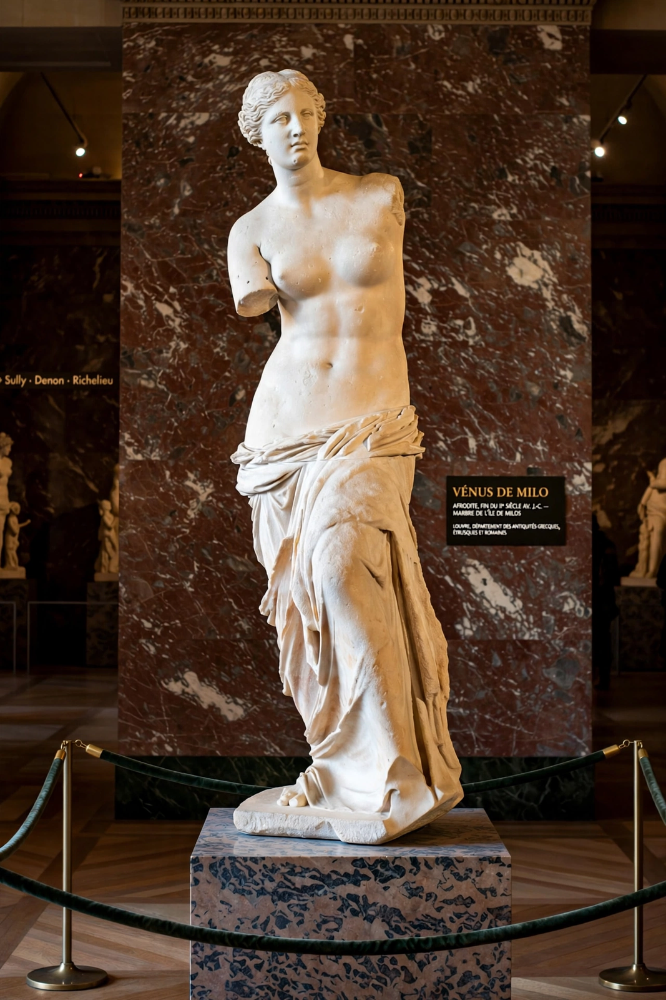

Aphrodite
From Wikipedia, the free encyclopedia

Aphrodite is the ancient Greek goddess of love, beauty, pleasure and procreation, identified by the Romans with Venus. According to Hesiod, she was born from the sea foam (aphros) that gathered around the severed genitals of Uranus, coming ashore at Cyprus; in Homer she is instead the daughter of Zeus and Dione. One of the twelve Twelve Olympians, she was worshipped across the Greek world, especially at Paphos, Cythera and Corinth.
Myths
Aphrodite was married to the smith-god Hephaestus but loved Ares, Adonis and the mortal Anchises, by whom she bore Aeneas, ancestor of Rome's founders — a link celebrated in the Homeric Hymns and Virgil's Aeneid. Her gift of Helen to Paris in the Judgement of Paris started the Trojan War. Myths of Pygmalion, Psyche, Atalanta and the death of Adonis explore love's joys and destructiveness.
Cult and iconography
Her sanctuaries at Paphos (where she was worshipped in aniconic form) and Corinth were famous; her symbols include the dove, sparrow, swan, myrtle, rose and the mirror, and her attendants the Charites (Graces) and Eros. Scholars see Near Eastern antecedents — the Phoenician Astarte and Mesopotamian Ishtar — behind her Cypriot cult.
In art
Aphrodite defined the female nude in Western art: Praxiteles' Aphrodite of Knidos (4th century BC) was the first monumental female nude statue; the Venus de Milo and Botticelli's The Birth of Venus are among the most famous artworks in the world.